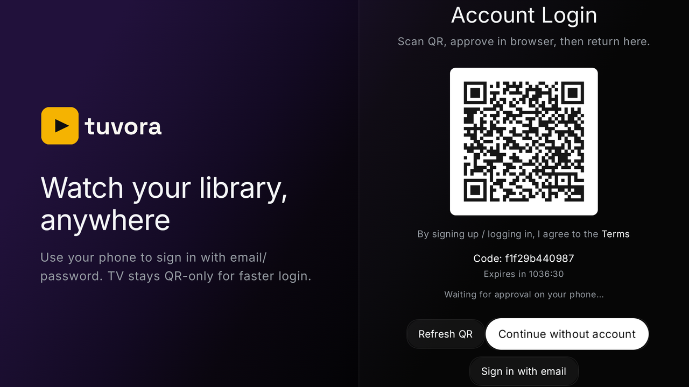
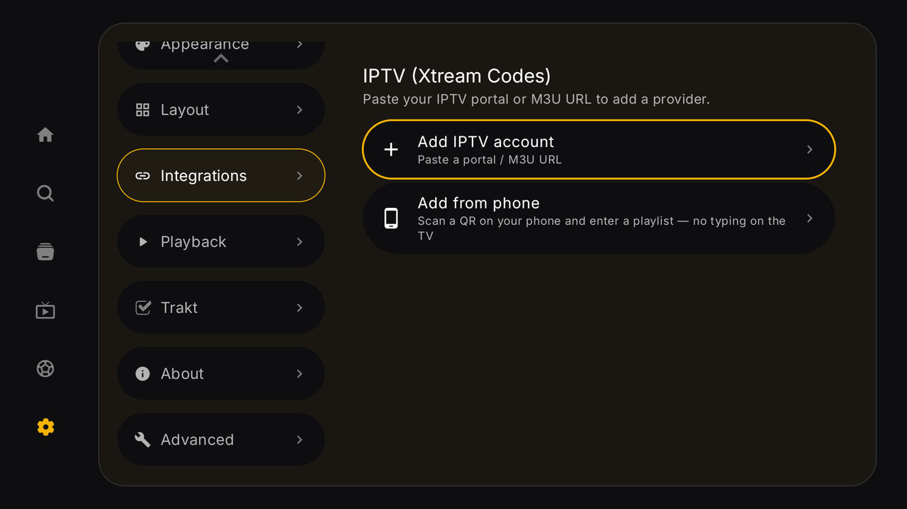
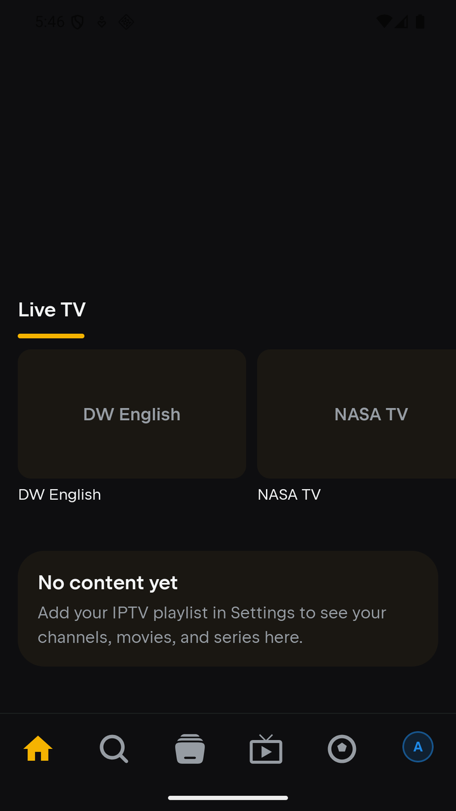
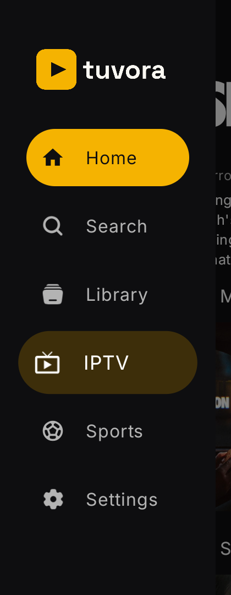

🚀 Getting started with Tuvora
Install the app, sign in once, add a playlist, and you're watching. Here's the lay of the land.
1. Install
Tuvora is in beta on Google Play. Join the tester group first, then install:
- Join the tester group with your Google account.
- Open the link for your device — phone / tablet or Android TV / Google TV — and tap Download it on Google Play.
2. Sign in (optional, but you want it)
An account syncs your playlists and watch progress between your phone and your TV.
📱 Phone
- Tap your profile avatar (right end of the bottom bar) to open Settings → Account → Sign In.
- Enter email + password, then Sign In — or Create Account if you're new. You can also Continue Without Account; your data then stays on the device only.
📺 TV — no typing needed
- Open Settings (bottom of the left sidebar) → Account → Sign In / Create Account.
- The TV shows a QR code: "Scan QR and sign in on your phone." Scan it with your phone camera, approve the sign-in on the phone, and the TV logs itself in.
- Prefer the remote? Choose Sign In to type email + password on screen instead (there's a Continue with QR button to switch back).

3. Add your playlist
Tuvora plays your content — add it as an M3U playlist, an Xtream Codes login, or a Stalker portal. Each has its own short guide.
💡 TV tip: in the IPTV section, pick Add from phone — scan the QR with your phone and type the playlist details there instead of with the remote.

4. Finding your way around
📱 Phone — bottom tabs
- Home — continue watching + your content rows
- Search — search everything
- Library — your saved items
- IPTV — your playlists, with Live TV / Movies / Series sections and the guide
- Sports — the Sports centre: fixtures and events, matched to channels in your playlist
- Profile avatar — profiles & Settings

📺 TV — left sidebar (D-pad)
Press left to open the sidebar from anywhere: Home, Search, Library, IPTV, Sports, Settings. Inside IPTV you get the same Live TV / Movies / Series sections. Long rows scroll with the D-pad; back returns you to the sidebar.

5. If something's off
- Playlist trouble → check the matching guide's troubleshooting section first.
- Found a bug? Report it on GitHub — never include your server URL or password.